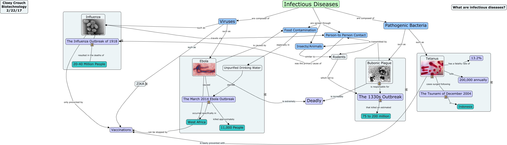

WARNING:
JavaScript is turned OFF. None of the links on this concept map will
work until it is reactivated.
If you need help turning JavaScript On, click here.
This Concept Map, created with IHMC CmapTools, has information related to: Infectious Diseases, The Influenza Outbreak of 1918 resulted in the deaths of 20-40 Million People, Influenza only prevented by Vaccinations, Influenza travels via Person-to Person Contact, The March 2014 Ebola Outbreak killed approximately 11,000 People, Ebola is caused by Food Contamination, Infectious Diseases are composed of Pathogenic Bacteria, Ebola caused The March 2014 Ebola Outbreak, Infectious Diseases are spread through Insects/Animals, Insects/Animals similar to Rodents, Ebola is extremely Deadly, Viruses such as Influenza, Bubonic Plague is responsable for The 1330s Outbreak, Zika is unaffected by Vaccinations, Tetanus has a fatality rate of 13.2%, Influenza surged in The Influenza Outbreak of 1918, Infectious Diseases are composed of Viruses, Tetanus is easily prevented with Vaccinations, Tetanus cases surged following The Tsunami of December 2004, The 2016 Zika Virus Outbreak first began in Latin America, The 1330s Outbreak that killed an estimated 75 to 200 million
